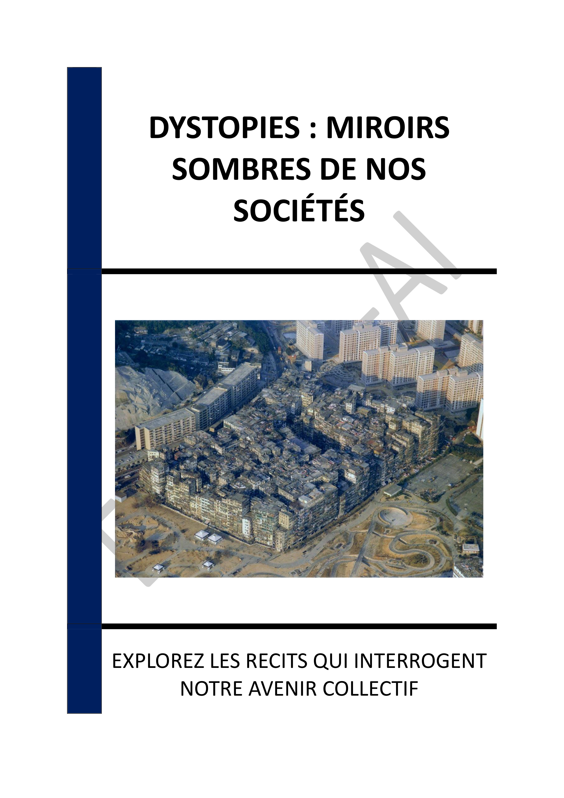
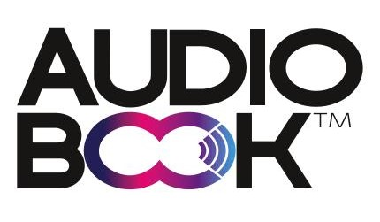

- INTRODUCTION - LES MONDES DYSTOPIQUES : UN MIROIR DE NOS SOCIÉTÉS
- Chapitre 1 - DÉFINITION ET CARACTÉRISTIQUES DES DYSTOPIES
- Chapitre 2 - HISTOIRE DES DYSTOPIES : DES ORIGINES À NOS JOURS
- Chapitre 3 - ANALYSE DES ŒUVRES MAJEURES : ORWELL, HUXLEY ET ATWOOD
- Chapitre 4 - LES SOUS-GENRES DE LA DYSTOPIE : POLITIQUE, TECHNOLOGIQUE, ÉCOLOGIQUE ET POST-APOCALYPTIQUE
- Chapitre 5 - LA DYSTOPIE DANS LE CINÉMA ET LES SÉRIES TÉLÉVISÉES
- Chapitre 6 - IMPACT DES DYSTOPIES SUR LA CONSCIENCE SOCIALE ET POLITIQUE
- Chapitre 7 - LES DYSTOPIES CONTEMPORAINES ET LES ENJEUX ACTUELS
- Chapitre 8 - COMPARAISON ENTRE DYSTOPIE ET UTOPIE : RÉFLEXIONS CRITIQUES
- CONCLUSION - VERS UN AVENIR ÉCLAIRÉ PAR LES LEÇONS DES DYSTOPIES
📄 Consulter les annexes du livre
Mentions légales